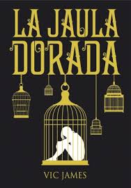

la jaula dorada

comprar deconexion
Ya sabes lo que dicen: si haces tu decenio de esclavitud demasiado pronto, jamás lo superarás; si lo haces demasiado tarde, jamás lo acabarás.»
En el mundo hay dos tipos de personas: Diestros y Ordinarios. Los primeros son aristócratas con poderes oscuros, los segundos gente corriente. Unos gobiernan y viven en el lujo, los otros deben cumplir diez años de esclavitud.
Los Jardine son los Diestros más poderosos del país, los Hadley son unos Ordinarios cualquiera. Pero ambas familias tienen algo en común: tres hijos. Sus destinos se unirán para siempre cuando los Hadley vayan a cumplir su esclavitud al servicio de los Jardine.
Ya nada volverá a ser igual.